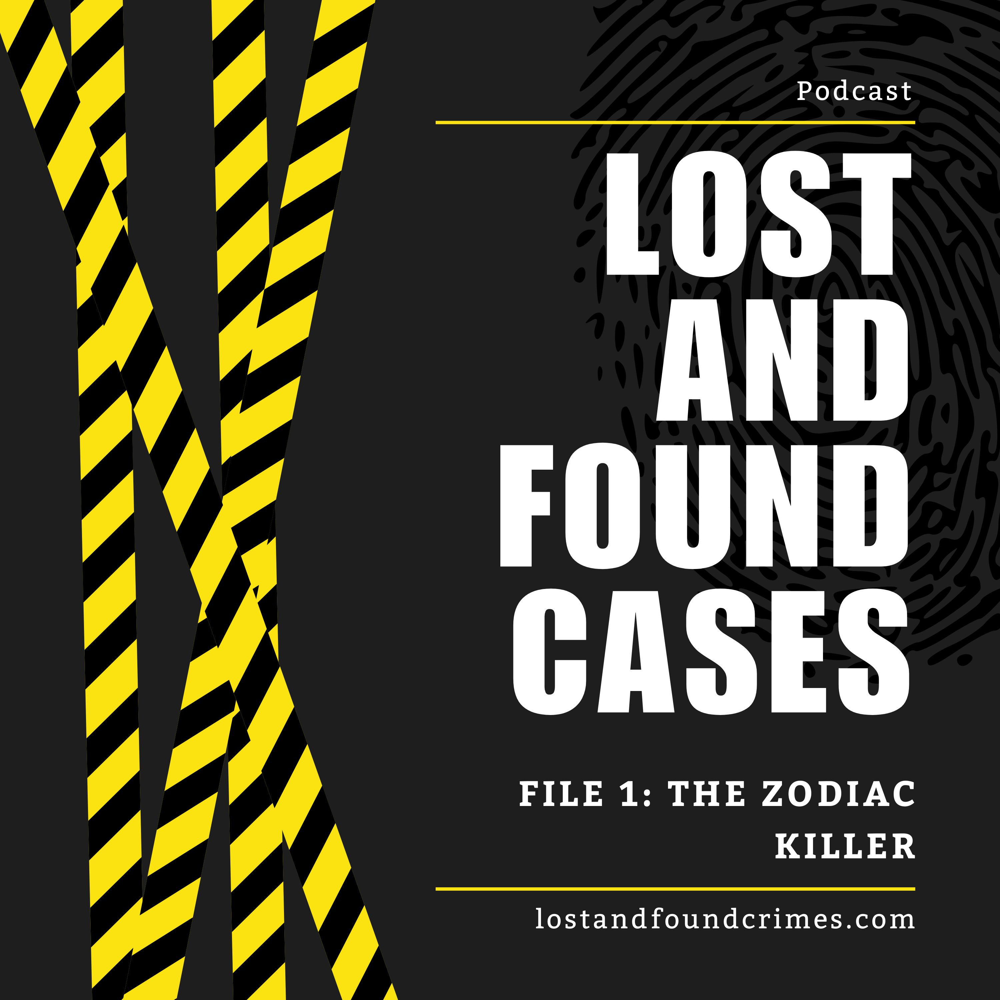
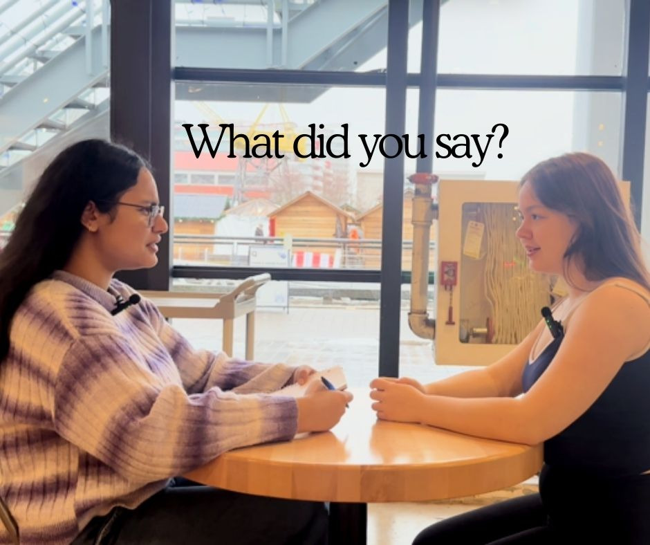

Gallery
Brand Infographic
This is a visual representation of my brand, values, and online identity. It highlights the traits of my brand and shows the lessons I've learned about digital responsibility. Through this project, I learned how to communicate who I am through design.
Lost and Found Cases Episode 1: The Zodiac Killer
Trigger Warning: This episode discusses real-life violent crime, including murder and threats by a serial killer, and references victims and unsolved cases. Listener discretion is advised.
Lost and Found Cases is a true crime podcast I created with a friend, where we explore unsettling and unsolved criminal cases. This episode focuses on the Zodiac Killer, examining his crimes, cryptic letters, and more. Through this project, I developed storytelling, research, and audio editing skills.

What did you say?
This is a comedy skit on an interview where the interviewer mishears everything the applicant says, leading to funny misunderstandings. Through this project, I explored timing, sound effects, and visual storytelling. It taught me about the importance of clear communication and how humor can effectively engage an audience.
